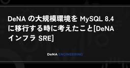
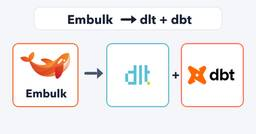
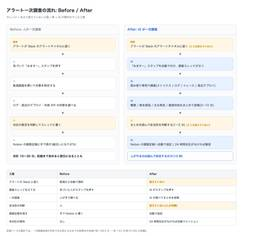
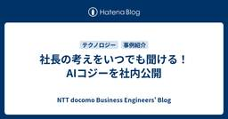
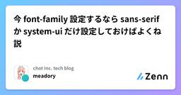

直近1週間の人気フィード
はてなブックマーク数を元に新着優先で並べ替え
メモリに載らないGROUP BYをDuckDBはどう処理するのか 73
73 株式会社ログラス テックブログのフィード
株式会社ログラス テックブログのフィード
!この記事は毎週必ず記事がでるテックブログ Loglass Tech Blog Sprint の160週目の記事です！4年連続達成まであと52週となりました！ログラスの龍島(@hryushm)です。先日スイカを一玉いただく機会があったのですが、とても大きいので一度に全部は食べきれず、切り分けて冷蔵庫に入れて数日かけて食べました。ということで今日はメモリに載りきらないデータの処理方法の話です。 はじめに先日、DuckDBの開発元であるDuckLabsがAWSに加わることが発表されました[1]。そのDuckDBは、メモリより大きなデータを扱うのが得意だと言われます。公式ドキュメン...
3日前
AIに12機能を書かせたら、レビューに5営業日かかった 34 RAKUS Developers Blog | ラクス エンジニアブログ
RAKUS Developers Blog | ラクス エンジニアブログ
前提：楽楽明細とは別のアプリとして作った 起きたこと：12機能を1本のプルリクにまとめた 原因：4層の名前までしか決めていなかった 対策：機械に判定させる範囲を広げ、人が見る範囲を絞る 実例：レビューで通せなかった箇所 次にやるなら：プルリクの切り方から変える チェックリスト：着手前に決めておく項目 編集後記：インタビューを終えて ラクス技術広報です。 開発本部では、各部署のAI活用の取り組みを技術広報がインタビューし、記事にしています。今回は電子請求書発行システム「楽楽明細」の新しいオプション機能を、AIにほぼ実装させて約2か月でリリースした事例です。 本記事は、AIを使って順調に機能開発が…
1日前
単体テストの実行時間を6割程度削減してみた 30 DRESS CODE TECH BLOGのフィード
はじめにこんにちは、Dress Code 株式会社でプロダクトエンジニアをやっている津田です。AI が実装の大半を担ってからずいぶんと経ち、単体テストによってある程度の動作の保証をしてくれるようになった一方で、いつの間にか単体テストの実行時間が伸びていました。CI環境で50件計測し、p90 で 16分14秒 にもなっていました。これには GitHub Actions の setup 等も含め、ですが、単体テストの実行時間だけでも14分30秒かかっていました。CIに時間がかかると、そのまま開発体験の悪さにも直結します。軽微な不具合修正であったとしてもリードタイムとしてその程度以上...
2日前

「なぜ動くのか」を説明できるエンジニアへ。自作で学ぶWebアプリケーション研修教材を公開 82 Speee DEVELOPER BLOG
Speee DEVELOPER BLOG
Speeeの大場です。 AIの助けを借りて、アプリケーションが動いた。そのとき、ブラウザから送られたリクエストがどう処理され、画面に結果が返ってくるのかを、自分の言葉で説明できるでしょうか。 これからエンジニアを目指す方にとって、「AIを使って開発しながら、何を、どこまで自分で理解すればよいのか」は悩ましい問いです。新卒エンジニアの教育を担う方も、成果物を作る経験を、技術への理解にどうつなげるかを考える場面があるのではないでしょうか。 Speeeでは、この問いに向き合う取り組みとして、Webアプリケーション研修教材を公開します。この記事では、教材の背景にある問題意識と、学習の機会をどう設計した…
3日前

Claude Codeとの会話を、チームの記憶にする ── 開発の文脈をメモリに残して共有する仕組み 37 ZOZO TECH BLOG
ZOZO TECH BLOG
はじめに こんにちは、ZOZOTOWN開発本部Webバックエンドブロックの和氣です。普段はZOZOTOWNのバックエンドを担当しています。 日々の開発にClaude Codeを使っています。使ううちに、仕様や経緯を毎回プロンプトで説明し直していることに気づきました。そこで、Claude Codeとの会話をMarkdownで残し、作業に合わせたコンテキストをClaude Code自身が組み上げるようにしました。以降、残したMarkdownを「メモリ」と呼びます（Claude Code標準のメモリ機能とは別物です。違いは後述します）。 現在、メモリは個人に閉じず、職種を跨いで十数人で共有しています…
3日前

2026年版: Mac開発環境の最新セットアップとインストールスクリプト（翻訳） 170 TechRacho
TechRacho
概要 元サイトの許諾を得て翻訳・公開いたします。 英語記事: My Development Setup in 2026 | baweaver 原文公開日: 2026年08月04日 原著者: Brandon Weaver 日本語タイトルは内容に即したものにしました。 ツールや拡張などへのリンクを適宜追加しています。 本記事は主にRails開発用の環境構築について解説されていますが、それ以外の環境構築にも有用です。 2026年版: Mac開発環境の最新セットアップとインストールスクリプト（翻訳） 新たな冒険に踏み出すにあたり、改めて自分の業務用ノートPCと個人用ノートPCの開発環境のセットアップをつぶさに点検してみた […]The post 2026年版: Mac開発環境の最新セットアップとインストールスクリプト（翻訳） first appeared on TechRacho.
4日前

Product Leaders AI 2026に参加！AI時代のプロダクトリーダーに求められることを、あらためて考えた1日 18 Nealle Developer's Blog
Nealle Developer's Blog
こんにちは！ニーリーでPdMをしている阿部です。 この1年で、AIによって自分自身の働き方は大きく変わった感覚があります。特にデータ分析等の情報収集は、以前とは比べものにならないくらいラクになっており、同じような感覚の方も多いのではないでしょうか。 そんな中で、他のプロダクトリーダーはどう変わってきているのか。そもそも、どう変わるべきなのか。この部分を自分の目で確かめるべく、9月4日開催の「Product Leaders AI 2026」に参加してきました。 Product Leaders AI 2026とは 日本CPO協会が主催する、プロダクトマネージャーやCPO、VP of Product…
1日前

Agent Skillは振る舞いとナレッジを分けて設計する 56 Social PLUS Tech Blogのフィード
どうもこんにちは、たくびーです。弊社ではClaudeのチームプランに契約しており、開発者全員がClaude Codeを使うことができます。希望者はChatGPTのチームプランも使えてCodexを併用することも可能です。私はAI開発環境整備の一環でルールやスキルの作成やメンテナンスをすることが多いです。そこで最近はエージェントスキルの設計方針について考えることが多く、現時点でどういう観点でスキルを作成しているかということをご紹介したいと思います。!記事の内容は人間が書いていますが、調査などにAIを使用しています。 TL;DRスキルを書くときは振る舞いとナレッジを分ける...
3日前

DeNA の大規模環境を MySQL 8.4 に移行する時に考えたこと[DeNA インフラ SRE] 54 Blog on DeNA Engineering
Blog on DeNA Engineering
こんにちは、IT 基盤部の西崎です。主に DeNA がグローバルに展開するゲームのインフラ管理を担当しています。今回は自分の所属する IT 基盤部第二グループで MySQL を 8.4 以降どのように動かし続けるかについて検討したことを紹介します。結論としては Aurora などのマネージドサービスへの移行を選択しており、他の選択肢で実際に導入検証ができた部分も少ないのですが、変わり続けるデータベース情勢の中での調査検討の一事例として見て頂ければ幸いです。1
3日前
RubyのHashがメモリ食いである理由を探ってメモリ使用量を削減した話（翻訳） 36 TechRacho
概要 原著者の許諾を得て翻訳・公開いたします。 英語記事: Shrinking Ruby Hashes | byroot’s blog 原文公開日: 2026年08月05日 原著者: byroot -- Railsコアコミッター、Rubyコミッターです 日本語タイトルは内容に即したものにしました。 原文の小文字で書かれたhashは原則として「ハッシュ」としています。 RubyのHashがメモリ食いである理由を探ってメモリ使用量を削減した話（翻訳） 既にご存知かと思いますが、Rubyの最適化の中でとりわけ私の興味を強くそそるのは「メモリ使用量」です。Rubyデプロイメントのほとんどはforkに依存しているので、いわ […]The post RubyのHashがメモリ食いである理由を探ってメモリ使用量を削減した話（翻訳） first appeared on TechRacho.
3日前

生成AIによるデータ分析を「仕様」から始める：仕様駆動データ分析（SDA）の実践 34 NTT docomo Business Engineers' Blog
NTT docomo Business Engineers' Blog
生成AIを使えば、SQLやPythonコード、グラフなどのたたき台を短時間で作れます。 しかし、分析目的や指標、対象データなどの前提が曖昧なままでは、生成された結果が正しく見えても、そのまま意思決定に使えるとは限りません。 そこで私たちは、分析に必要な前提を「仕様」として整理し、その仕様を基準に人間とAIが段階的に分析を進める仕様駆動データ分析（Specification-Driven Analytics、以下SDA）というアプローチを検討しました。 なお、SDAは、仕様駆動開発などの考え方を基に、私たちが生成AIを使ったデータ分析で試行している進め方を整理したものです。新しい標準手法を提唱す…
4日前

新メンバーが早く馴染むチームビルディング「トリセツ会」 118 Techtouch Developers Blog
Techtouch Developers Blog
新メンバーの早期打ち解けを狙うチームビルディング「トリセツ会」の実践ノウハウ。お互いの仕事スタイルや事情等を共有し、心理的安全性とバリュー醸成をどう両立したかを、メンバーのリアルな感想を交えてご紹介します。
6日前

夏休みの宿題をオンスケで終えられなかった私が、AWS全冠を約2か月で完走できた理由 56 フューチャー技術ブログ
フューチャー技術ブログ
2026年7月から8月の約2か月で、AWS認定の残り11資格に一発合格し、全冠を達成しました。細かい学習計画は立てず、合格したその場で次の試験を予約する「予定先入れ・締切駆動」で進めた記録です。
4日前

ETL 基盤を Embulk から dlt + dbt に乗り換えた 2 つの理由 55 エムスリーテックブログ
エムスリーテックブログ
この記事はコンシューマーチームブログリレー 4日目の記事です。 Embulk 0.9.25 で動かしていた担当プロジェクトの ETL を、dlt + dbt と Step Functions に全面移行しました。証明書エラーと BigQuery のレガシー API 利用で観念した話です。 こんにちは。エムスリーのコンシューマーチームエンジニアの園田です。 コンシューマーチームで大幅なメンテナンスなく元気に動いていたEmbulkですが、今年の夏に全部やめました。 なぜやめたのか、なぜ dlt + dbt なのか、やってみてどこでハマったのか、という順で書いています。 新しい技術の話はほとんどなく…
4日前

QuineMakerを作った話と技術的な解説 22 エムスリーテックブログ
はじめに エムスリー株式会社、業務執行役員VPoEの河合(@vaaaaanquish)です。 本記事は、私もGMとして在籍する「AskDoctors開発チーム」のブログリレー 5日目の記事です。 本記事では、私が個人開発した「QuineMaker」というサービスの技術面の紹介をします。 はじめに QuineMakerについて Quineについて Quineの作り方 画像からのQuine生成 画像に対して適切なコードを見つける 色付きQuineの生成 動画からのQuine生成 動画からのQuineの難しさ おわりに We are hiring !!
3日前

認可基盤の移行を安全に進める- Cerbosの選定から新旧基盤の並行稼働、切り替えまで 20 ACES エンジニアブログ
ACES エンジニアブログ
はじめに 認可基盤を移行することになった背景 認可エンジンの選定と、会議一覧の認可フィルタ設計 Cerbosを選んだ理由 会議一覧をどう認可フィルタするか PoCによる設計の具体化 データの移行、新旧並行稼働、新認可への切り替え デュアルライト（新旧二重書き込み） データ移行 パラレルラン（新旧認可の並行検証） 新認可への切り替えと、ロールバックを前提としない判断 うまくいった点と反省点 うまくいった点 反省点 おわりに はじめに こんにちは、株式会社ACES でソフトウェアエンジニアをしている中野です！ 最近シャクティマットを購入し、寝る前に悶えながら楽しんでます。 私が所属するチームでは、…
3日前
Ruby Webアプリケーションで使うセルフホスティングサーバーをセットアップする（翻訳） 10 TechRacho
概要 原著者の許諾を得て翻訳・公開いたします。 英語記事: Binary Solo | Server setup for Ruby web applications 原文公開日: 2026年07月23日 原著者: Ayush Newatia 日本語タイトルは内容に即したものにしました。 Ruby Webアプリケーションで使うセルフホスティングサーバーをセットアップする（翻訳） Herokuなどのプラットフォームが使いやすくなったおかげで、私を含む多くの開発者は、サーバーのセットアップや管理をほとんど必要としなくなりました。そのため、サーバー管理やアプリのセルフホスティングすることについて少々不安を感じていました。 […]The post Ruby Webアプリケーションで使うセルフホスティングサーバーをセットアップする（翻訳） first appeared on TechRacho.
2日前

AIエージェント向けコーディングルールをArchUnitで機械的に検証する運用 69 ZOZO TECH BLOG
はじめに こんにちは。商品基盤部の藤本です。 私たちのチームでは、生成AIコーディングエージェント（以下、AIエージェント。主にClaude Code）を使って開発に取り組んでいます。以前からAIエージェントに一貫した実装をしてもらうため、ルールを書いて指示する運用を続けてきました。しかし、ルール同士の矛盾やレビューだけでは遵守を保証できないといった課題がありました。本記事ではこの課題と、ArchUnitによる機械的な検証へ落とし込むまでの取り組みを紹介します。
6日前
「ひかりでんわ」を作って学ぶ、子ども向け通信実験教室をやった話 42 NTT docomo Business Engineers' Blog
従業員の家族を職場に招く「ファミリーデー」で、子どもたちに通信の仕組みを体験してもらうため、光ファイバーを使った音声通話装置を一から作りました。 この記事では、回路の試作やプリント基板・ケースの製作、人数分の量産、そして当日の実験教室の様子までをご紹介します。 はじめに AIロボット部とは 光ファイバーで「通信」を体験してもらう 通信装置を作る アナログ回路と格闘する プリント基板を作る ケースも3Dプリンターで作る そして量産へ…… 当日の様子 おわりに はじめに こんにちは、AIロボット部（社内サークル）部員の浅野秀平です。 普段はデジタル改革推進部で、社内のデータ分析の仕事をしています。…
4日前

【ミラティブ】iOSDC Japan 2026 にスポンサーとして協賛します 5 Mirrativ Tech Blog
Mirrativ Tech Blog
こんにちは、ミラティブの森です。 ミラティブは、2026年9月11日〜9月13日に有明セントラルタワーホール＆カンファレンス+ニコニコ生放送で開催される iOSDC Japan 2026 にスポンサーとして協賛させていただきます！ iOSDC Japan 2026 については以下公式サイトをご覧ください。 iosdc.jp 協賛する背景 ミラティブは、ミッションである「わかりあう願いをつなごう」のもと、ゲーム配信プラットフォーム「Mirrativ」を運営しています。 ミラティブは「Mirrativ Tech Community & Activity Policy」を掲げ、エンジニアの社内外への…
1日前

Herdr × git worktree × Claude Codeの相性がいい話 38 Gemcook Tech Blogのフィード
こんにちは、村中（@wage790）です。関西でバックエンド・クラウドインフラのエンジニアをしています。普段の開発でClaude Codeを1つだけ動かしていると、その応答をただ待つ時間ができてしまいます。そこで、Claude Codeを複数並べて動かすことにしました。ただそれだと、同じ作業ディレクトリで2つ動かした場合に、片方がgit switchするともう片方が読んでいるファイルまで入れ替わってしまいます。それを避けるため、git worktreeで作業ディレクトリを分けました。ただ、worktreeを作るたびにgit worktree addを打ってディレクトリを移動するのが今...
4日前

AI時代のエンジニア選考・面接のパターン 59 カミナシ エンジニアブログ
カミナシ エンジニアブログ
カミナシで、ソフトウェアエンジニアをしている osuzu です。 面接官として中途採用の選考にも関わっていますが、ここ1年くらいでエンジニア選考の設計を見直す必要が強まってきたと感じています。 私のチーム採用では、これまでオンラインコーディングテストや持ち帰り課題を選考に利用してきましたが、AIの登場によって、候補者さまはAIを使って課題を作成するようになり、Opus 4.5 がリリースされたあたりから成果物の精度がぐんと上がりました。 その結果、提出された課題から期待する経験値と、面接でお会いした本人から見える経験値が、うまく重ならないケースが出はじめたのです。提出物の設計や実装は的確なのに…
6日前

「みんなのもの」の在庫は、1つのドメインとして成立するのか ── 20年もののモノリスから境界と責務を決めるまで 31 ZOZO TECH BLOG
はじめに こんにちは、ECプラットフォーム部マイクロサービス戦略ブロックの半澤です。普段は、システムアーキテクチャの全体最適化など、モノリスからマイクロサービスへシステムをリプレイスする過程で生じる、複数チーム間の課題解決を主に担当しています。 本記事では、ZOZOの基幹システムリプレイスにおいてモノリスからマイクロサービスへ移行するために、イベントストーミングを起点にドメイン間の境界と責務の決定をどのように進めたかを紹介します。あわせて、既存コードの解析と付箋への変換に使ったClaude CodeのAgent Skillsの設計を、付録で共有します。なお、イベントストーミング（業務で起きる出…
4日前

ドメインモデル貧血症はなぜ生まれるのか — Decision パターンで DDD トリレンマを解く 47 テラーノベル テックブログのフィード
テラーノベルで Go を書いている typer です。この記事は次のような方向けです。Go でコードを書いていて、domain 層にロジックが集まらないと感じている方DDD の戦術的パターンを入れてみたが、結局 domain の外側にロジックが溜まっている方リポジトリを呼ぶために domain に context と error を持ち込むかどうかで迷ったことがある方先に結論を書いておきます。ドメインモデル貧血症は、怠慢ではなく構造的なトリレンマの結果として生まれやすい「判断するために何が要るか」を型で返せば、型の制約を保ちながらトリレンマは解ける 「戦術的 D...
6日前

キャッチアップ3時間、8日でリリース。AI時代のインターン受け入れで見えたメンターの役割 29 Findy Tech Blog
Findy Tech Blog
こんにちは、ファインディでFindy Team+の開発をしているrobinです。 先日ファインディで初の試みとなるエンジニアインターンが実施され、2週間メンターを務めました。前職でもインターンのメンターを何度か経験してきましたが、AI時代にインターンを受け入れるのは今回が初めてでした。 AIもあるし、前職と同じようにやればいい。始まる前はそう踏んでいました。ところが、変わったのはインターン生の進み方だけではありませんでした。 自走はAIがサポートする メンターの役割が変わる AIが働きやすい環境を整える 開発文化もオンボーディングする まとめ 課題は、以前からFindy Team+のご導入企業…
5日前

「覚え直さなくていい」を最優先にしたAI導入 ― アラート一次調査の自動化 3 asken テックブログ
asken テックブログ
はじめに askenでは「AI Nativeな開発組織へ進化する」をビジョンに掲げ、その全体像を以下の記事でお伝えしました。本記事は、その取り組みを現場の視点から紹介する関連記事です。 AI Nativeな開発組織へ ― askenエンジニアが挑む2つの変革 - asken テックブログ こんにちは。インフラエンジニアの鈴木です。 asken では、サービスの異常を検知するアラート(監視システムが自動で出す警告通知)が Slack に流れてきます。それを見て「本当に問題が起きているのか」「対応が必要なのか」を最初に切り分ける作業を、私たちは「アラートの一次調査」と呼んでいます。 2026 年 …
1日前
React 19移行で学んだpnpmの依存関係解決の仕組み 24 DRESS CODE TECH BLOGのフィード
こんにちは、Dress Code でプロダクトエンジニアをしているてちです！少し前にアプリケーションで利用しているReactについて、React18からReact19への移行を行いました。今回は移行で遭遇した不具合について、調査をしていく中で多くの学びがあったので記事にしてみました。!自分なりに調査した内容を書いてますが気になる点あればお気軽にご指摘ください...！ React19移行で見つかった謎の不具合pnpm workspaceとViteを使うモノレポで、複数あるReactアプリケーションの一つをReact19に更新しました。他のアプリはReact18のままだったた...
5日前
S3 Vectors で見落としがちなクォータとコストのかかり方 21 Taste of Tech Topics
Taste of Tech Topics
最近パーソナルジムに通い始めた大塚です。 さっそく筋肉痛の洗礼を浴びています😇 今回は、Amazon S3 Vectorsを利用する上で、注意したいクォータの項目と、コストのかかり方について解説します。 S3 Vectorsは低コストなベクトルストアとして期待できる一方、Bedrock Knowledge Baseと組み合わせることで変わる制約や、データの持ち方によって変化する料金には注意が必要です。導入後に設計を見直すことにならないよう、事前に押さえておきたいポイントを見ていきます。 1. S3 Vectorsの概要 OpenSearch Serverlessとの比較 2. S3 Vecto…
5日前
GitHub の権限管理を Terraform 化すると体験がよかった 31 コミューン株式会社のフィード
はじめに新規のメンバーが入るたび、チームの構成が変わるたび、依頼が Slack ワークフローで流れてきます。その都度、GitHub をブラウザで開いてパスキーで認証して、画面をポチポチする。しんどいですね。いい加減 Terraform にしました。なにを管理したかと詰まったところについて紹介します。https://github.com/integrations/terraform-provider-github 管理したものTerraform でこれらを管理することにしました。すべてを管理するわけではありません。まずは画面ポチポチを減らすこと、依頼自体を Pull Req...
6日前
【ミラティブ】Go Conference 2026 にランチスポンサーとして協賛します 4 Mirrativ Tech Blog
Go Conference こんにちは、ミラティブの森です。 ミラティブは、2026年9月11日(金)に中野セントラルパークカンファレンスで開催される Go Conference 2026 に協賛させていただきます！ Go Conference 2026については以下公式サイトをご覧ください。 gocon.jp 協賛する背景 ミラティブはミッションである「わかりあう願いをつなごう」のもとゲーム配信プラットフォーム「Mirrativ（ミラティブ）」を運営しています。 そして「Mirrativ Tech Community & Activity Policy」を掲げ、ミラティブエンジニアの社内外へ…
3日前

ルービックキューブを一撃で解く専用LLMを作った 27 Tech Blog - Turingのフィード
CUBE ZERO — ルービックキューブを一撃で解く専用LLMをゼロから育てた 1. なぜ作った？事前知識ゼロから育ち、ルービックキューブを一撃で解くLLMがあったら、かっこいいですよね。ということで、CEOの夏休みの自由研究として作りました！完成したモデルは、現在のキューブと過去の手順を受け取り、次の1手を自己回帰的に生成します。学習後は、初めて見る局面の99.83%を1回の生成で解けました。 2. ルービックキューブはどれくらい難しいのかルービックキューブには、約 4.3 × 10^19 通りの状態があります。ただし、すべての状態が同じ難しさではありません。完...
6日前
モバイルアプリ開発でもエージェントループを回したい！React Nativeで計画から検証・PRまで任せる 17 テラーノベル テックブログのフィード
こんにちは！テラーノベルでiOS/Android/Webとフロントエンド周りを担当している @kazutoyo です！Opus 4.5が出たあたりから、自分でコードを書くことがほとんどなくなりました。最近はループエンジニアリングという言葉も出てきて、エージェントに任せる流れがさらに加速している感じがあります。ただ、モバイルアプリで同じことをやろうとすると、Webアプリと比べて検証がしづらく、そこだけ人の手が残っていました。そこで使っているのが、以前紹介した agent-device です。エージェント自身がiOS Simulator / Android Emulatorを操作し...
4日前

社長の考えをいつでも聞ける！AIコジーを社内公開 26 NTT docomo Business Engineers' Blog
NTTドコモビジネスでは、小島克重社長の考え方や経営判断の背景を、対話形式で相談できるAI社長「AIコジー」を開発しています。最初は経営幹部向けのAI社長として提供していましたが、2026年7月にセキュリティを守りながら一般の社員でも使えるように「AIコジー（全社版）」を公開しました。 参考：NTTドコモビジネス、AI社長が営業に助言 システムは外販も検討（日本経済新聞） 参考：「“社長AI”って意味ある？」→言った本人も手のひら返し 幹部の9割が高評価したNTTドコモビジネスの「AI小島社長」開発録（ITmediaNEWS） 以下では、幹部版を全社版へ広げるにあたって行った3つの工夫を、開発…
6日前
Go探無比 (gotan) - Go Conference 2026 Workshop 3 ANDPAD Tech Blog
ANDPAD Tech Blog
アンドパッドでGoを利用して諸々のプロダクトを作っている tomtwinkle です。 来る2026年9月11日（金）、Go Conference 2026が開催されますね。 gocon.jp そして、Go Conference 2026では、弊社の sunecosuri が 「go.devの歩き方、その先へ」 というワークショップを開催します！ ところで、ワークショップのプロポーザルでは、 「go.devの歩き方、その先へ」 の名前で応募していたこのワークショップですが、正式名称が決定しました。 ワークショップの正式名称は、 「Go探無比（gotan）」 です。 Go探無比 は、「Goの探索…
2日前

Yahoo!ニュースの表示高速化で広告のクリックは増えるのか 3LINEヤフー Tech Blog (LY Corporation Tech Blog
こんにちは。LINEヤフーのディスプレイ広告（以下、ディスプレイ広告）の開発と兼務で、全社横断のWebパフォーマンス改善に取り組んでいるエンジニアの今宮です。一般にWebページの表示速度はユーザー体験...
3日前

Railsフレームワークを本格的にRactorに対応させるShopifyの取り組み（翻訳） 16 TechRacho
概要 CC BY-NC-SA 4.0 International Deedに基づいて翻訳・公開いたします。 英語記事: Bringing Rails into the Ractor-age | Rails at Scale 原文公開日: 2026年08月11日 原著者: Edouard Chin CC BY-NC-SA 4.0 Deed | 表示 - 非営利 - 継承 4.0 国際 | Creative Commons 日本語タイトルは内容に即したものにしました。 参考: class Ractor - Documentation for Ruby 4.0 Railsフレームワークを本格的にRactorに対応させる […]The post Railsフレームワークを本格的にRactorに対応させるShopifyの取り組み（翻訳） first appeared on TechRacho.
5日前

Kaggleコンペ紹介：AI Agent Security - Multi-Step Tool Attacks 8 松尾研究所テックブログのフィード
はじめにこんにちは、松尾研究所 データサイエンティストの力岡です。今回は、Kaggleで開催された「AI Agent Security - Multi-Step Tool Attacks」コンペに参加し、4,187チーム中4位（金メダル） を獲得することができました。本記事では、コンペの概要や攻略の考え方、私たちの取り組み、上位解法について紹介します。本コンペは、「AIエージェントのセキュリティ」を題材にしたレッドチーミングコンペです。PublicリーダーボードとPrivateリーダーボードで順位がほとんど入れ替わる激しいシェイクアップが起き、2,802チームがPrivateで...
5日前

既存システムのAI分析ワークフローを作り直す ── レビュー負担を減らす3つの改善 3 ZOZO TECH BLOG
はじめに こんにちは、ZOZOTOWN開発2部Webバックエンドブロックのぐらです。普段はZOZOTOWNのバックエンド開発を担当しています。ZOZOTOWNのリプレイスでは、既存システムの仕様を正確に把握することが欠かせません。私たちはこの分析にAIを活用してきました。しかし、人間による追加調査がまだまだ必要という課題を抱えていました。本記事では、AIによる既存システムの分析ワークフローを作り直した過程と、そこで得られた知見を紹介します。
4日前

今 font-family 設定するなら sans-serif か system-ui だけ設定しておけばよくね説 4 chot Inc. tech blogのフィード
いいと思いませんか？！？！？！？ 前提: デザイナーの意向は尊重しましょうこれはWebフォントなどを使わずOSの標準フォントを使う場合どうするのがいいんだろう？という趣旨の記事です。デザイナーに「俺はこのサイトにラグランパンチを使いたいんだ！！！！！！！！」と言われたら素直にラグランパンチを使いましょう。なんたってラグランパンチですからね sans-serif と system-ui で表示されるフォントはなんなんだ2026夏前置きはざっくり省略しまして各OS、ブラウザ、言語で sans-serif と system-ui がどんなフォントになるか調べてきました。ご査収くだ...
4日前